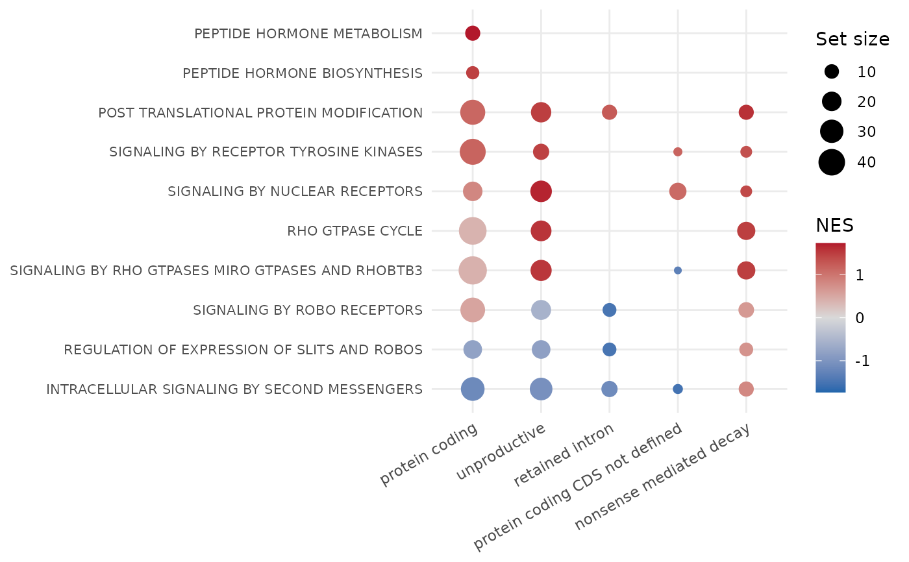

Runs gene set enrichment analysis (fgsea::fgseaMultilevel()) separately
for transcripts of each type, ranking transcripts by the statistic chosen
with rank_by (log2 fold-change by default, see Ranking). Gene sets
defined on gene symbols are expanded to all transcripts of their genes,
so each transcript category (protein coding, retained intron,
nonsense-mediated decay, ...) is tested on its own and in the combined
"unproductive" category. A category with fewer than two ranked
transcripts is skipped.
The IsoformicExperiment method uses the stored transcript-level
results and the annotation; the data frame method takes a transcript
table with transcript_name and transcript_type columns and the
columns rank_by needs (log2FC; log2FC and pvalue; or
lfc_median and lfc_sd), plus a tx_to_gene table.
run_productivity_enrichment() and run_apa_enrichment() run the same
analysis on genes ranked by their change in productive fraction or in
3' end usage, and take gene set collections in the same way.
read_gmt() reads gene sets in GMT format into a named list, and
plot_enrichment() draws a dot plot of enrichment results.
Usage
run_enrichment(
self,
genesets_list,
tx_to_gene = NULL,
pval_cutoff = 0.05,
tx_types = NULL,
min_size = 15,
max_size = 500,
rank_by = c("log2FC", "signed_p", "lfc_z"),
workers = getOption("isoformic.workers", 1L),
...
)
default_enrichment_types(annotation_types = NULL)
read_gmt(path)
plot_enrichment(
enrichment_df,
n = 30,
experiments = NULL,
nes_cutoff = 0,
strip_prefix = "^[A-Z]+_",
label_width = 50
)Arguments
- self
An IsoformicExperiment or a transcript-level DE table.
- genesets_list
Named list of character vectors (gene symbols), as returned by
read_gmt(), or a named list of such lists (see Collections of gene sets).- tx_to_gene
Data frame with
transcript_nameandgene_namecolumns (and optionallytranscript_type, used to choose the defaulttx_types); required by the data frame method, ignored otherwise.- pval_cutoff
Keep pathways with
pvalat or below this value;NULLkeeps all.- tx_types
Named list defining the transcript categories to test. Defaults to
default_enrichment_types(), which picksprocessed_transcriptorprotein_coding_CDS_not_defineddepending on the annotation version.- min_size, max_size
Minimum and maximum gene set size: sets with fewer or more genes are not tested.
run_enrichment()counts, in each transcript category, the genes of the set that have at least one ranked transcript of that category (thesizecolumn of the result counts transcripts); the gene-level enrichments count the ranked genes of the set.- rank_by
Statistic that ranks the transcripts:
"log2FC"(default),"signed_p"or"lfc_z"(see Ranking).- workers
Number of worker processes that run the
fgseacalls (one per collection and transcript category) in parallel: a whole number, or"auto"for the CPUs available to the session (see Workers). Defaults to theisoformic.workersoption, or 1 (serial).- ...
Passed on to
fgsea::fgseaMultilevel(). Eachfgseacall runs withBiocParallel::SerialParam()unlessnprocorBPPARAMis given. Preferworkers:nprocparallelises inside one call, which was slower than a serial run in our benchmarks, and on Unix-like systems it forks the session (see Workers).- annotation_types
Transcript types present in the annotation, used to choose between
processed_transcriptandprotein_coding_CDS_not_defined.- path
Path to a GMT file.
- enrichment_df
Result of
run_enrichment().- n
Number of top pathways (by adjusted p-value) to show.
- experiments
Categories to show;
NULLshows all.- nes_cutoff
Minimum absolute NES to show.
- strip_prefix
Regular expression removed from pathway names before plotting (default drops MSigDB collection prefixes such as
REACTOME_).- label_width
Pathway labels are wrapped to this many characters.
Value
run_enrichment() returns a tibble with the fgsea columns
plus experiment (the transcript category), rank_by and, for several
collections, collection. read_gmt() returns a named list of
character vectors (the unique gene symbols of each set).
plot_enrichment() returns a ggplot object, with one panel per
collection when there is a collection column.
default_enrichment_types() returns a named list of transcript types
per category.
Ranking
rank_by chooses the statistic that ranks the transcripts:
"log2FC"(default): the log2 fold-change of the stored results, a point estimate that ignores how well it is determined."signed_p":-log10(pvalue)with the sign of the fold-change, so that the test of the differential expression weighs the ranking. A p-value of zero gets the largest finite value of the table."lfc_z": the median fold-change over the inferential replicates divided by its standard deviation (lfc_median / lfc_sdofde_confidence()), so that a fold-change the quantification cannot determine ranks low. It needs the fold-change table thatadd_uncertainty(x, group = )stores, or these two columns in a data frame (the table ofde_confidence()works). The ranking has the contrast of that table, the last level ofadd_uncertainty()against the first; a warning (isoformic_contrast_mismatch) says so when most of its fold-changes have the sign opposite to the stored results. Transcripts that were not assessed, that were collapsed into a group or, for an object, that are not in its differential expression results are not ranked. A fold-change that is the same in every replicate gets the largest finite value of the table.
Collections of gene sets
genesets_list is either one collection (a named list of gene symbol
vectors) or several (a named list of such lists, for example
list(hallmark = read_gmt(h), reactome = read_gmt(r))). Each collection is
tested on its own, so that the adjusted p-values are those of the
collection, and the result has a collection column, by which
plot_enrichment() splits its panels. Every gene set and every collection
needs a name.
Workers
Each collection and transcript category is one fgsea call. With
workers above 1 (or the isoformic.workers option), these calls run in
parallel on that many mirai daemons (at most one per call), which need
the mirai package. workers = "auto" uses
parallelly::availableCores(), which follows the CPUs a job scheduler
(Slurm, the CPU affinity mask, a cgroup quota) allocated; without
parallelly it runs serially.
The daemons are fresh R processes that receive only the ranking of their call and the gene sets cut down to the IDs of that ranking (which gives the same result), never the session's objects, so their memory does not grow with the session. The session serializes all calls at once when it sends them, which costs it about the size of each ranking and of the gene sets cut down to it, once per call.
The first call with workers above 1 starts the daemons (one per
fgsea call, up to workers), with the session's library paths and one
BLAS and OpenMP thread each, and keeps them for the session: later calls
reuse them, so a loop of small calls (one contrast and a few collections
each) does not pay their start-up and their loading of fgsea every
time. A call that needs more daemons launches the missing ones; a call
with a smaller workers than the daemons running starts them again for
that call (one per fgsea call, up to its workers), so that no call
runs more fgsea calls at once than its workers. Daemons that died
between calls (killed for their memory, for example) are replaced by the
next call; when all of them die during a call, it fails after 30 seconds
without a connected daemon instead of waiting forever, and the next call
starts them again. An idle daemon holds the memory of its R process and of
fgsea (about 0.3 GB once it has run a call). Stop the daemons with
isoformic_workers(0); they are also stopped when
the session ends or isoformic is unloaded, and an interrupted call cancels
its fgsea calls on them. isoformic_workers(n)
starts n daemons ahead
(stopping those running), with the same settings,
which every call then uses as they are (replacing those that died), and
so do daemons started with mirai::daemons(n, .compute = "isoformic")
(workers then only decides whether to use them; they keep their own
thread settings, but every call puts the session's library paths first
while it runs; a call fails when none of them is connected, because
isoformic does not restart them).
Warnings of fgsea (ties in the ranking, imprecise p-values) raised on a
worker are raised again in the session when all calls have returned, once
per distinct message and call, naming the collection and the category.
fgsea estimates p-values by sampling. With one worker the calls use the
session's random number stream, in order, as in earlier versions, so
set.seed() before the call reproduces them. With more than one worker
every call gets its own seed, drawn from the session's stream before the
calls start: the result is the same for any number of workers above one,
and whether or not the daemons were already running (and reproducible
with set.seed()), but its sampled p-values differ slightly from those
of a serial run. Starting daemons with mirai::daemons() draws from the
session's stream, so daemons started that way after set.seed() change
the p-values of the calls that follow; start them before set.seed(),
or with isoformic_workers(), which leaves the stream where it was. A
single call always runs in the session.
BiocParallel::MulticoreParam() (and nproc on Unix-like systems) forks
the session: the forked workers share its memory, but tools that add up
the resident memory of processes (top, Slurm accounting without
UsePss) count the whole session once per worker.
See also
isoformic_workers() to start or stop the daemons ahead.
Examples
iso <- example_isoformic()
gmt <- system.file("extdata", "reactome_subset.gmt", package = "isoformic")
genesets <- read_gmt(gmt)
length(genesets)
#> [1] 40
if (requireNamespace("fgsea", quietly = TRUE)) {
res <- run_enrichment(iso, genesets, pval_cutoff = NULL, min_size = 2)
head(res)
plot_enrichment(res, n = 10)
}
